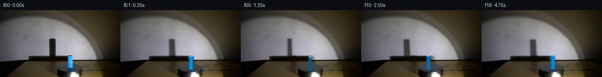

![首帧]()

Round 00
2026-11-05T00:27:06.911001+00:00像素候选变化代码 +280/−0inspection 更新
pixels f0060e4445ac68cc · code f4a966c81259ac21
查看本轮 generate.py 真实 diff
--- previous/generate.py
+++ current/generate.py
@@ -0,0 +1,280 @@
+from pathlib import Path
+import math
+
+import numpy as np
+from PIL import Image, ImageDraw, ImageFilter
+
+from artifact_io import save
+
+
+ROOT = Path(__file__).resolve().parent
+W, H = 256, 144
+SCALE = 4
+
+
+def soft_composite(base, color, mask):
+ """Composite a flat RGB color through an 8-bit Pillow mask."""
+ a = np.asarray(mask, dtype=np.float32)[..., None] / 255.0
+ c = np.array(color, dtype=np.float32)[None, None, :]
+ return np.clip(np.asarray(base, dtype=np.float32) * (1.0 - a) + c * a, 0, 255).astype(np.uint8)
+
+
+def polygon_mask(points, blur=0.0, scale=SCALE):
+ m = Image.new("L", (W * scale, H * scale), 0)
+ d = ImageDraw.Draw(m)
+ d.polygon([(round(x * scale), round(y * scale)) for x, y in points], fill=255)
+ if blur:
+ m = m.filter(ImageFilter.GaussianBlur(blur * scale))
+ return m.resize((W, H), Image.Resampling.LANCZOS)
+
+
+def reconstruct_clean_plate(src):
+ """Locally fill the source block and its initial wall shadow."""
+ clean = src.copy().astype(np.float32)
+
+ # The vertical wall shadow occupies x~=102..121, y~=57..99. Interpolate
+ # between intact wall samples on either side, retaining source-like fine
+ # texture from a nearby unoccluded patch. A feathered mask hides seams.
+ fill = clean.copy()
+ x0, x1, y0, y1 = 96, 127, 53, 100
+ for y in range(y0, y1):
+ left = src[y, x0 - 2].astype(np.float32)
+ right = src[y, x1 + 2].astype(np.float32)
+ for x in range(x0, x1 + 1):
+ q = (x - x0) / (x1 - x0)
+ smooth = left * (1 - q) + right * q
+ # Borrow only high-frequency grain from intact wall farther left.
+ sx = max(1, x - 42)
+ local = src[y, sx].astype(np.float32)
+ local_mean = src[y, max(0, sx - 3):min(W, sx + 4)].mean(axis=0)
+ fill[y, x] = smooth + 0.33 * (local - local_mean)
+ wall_mask = Image.new("L", (W, H), 0)
+ ImageDraw.Draw(wall_mask).rectangle((98, 55, 124, 99), fill=255)
+ wall_mask = wall_mask.filter(ImageFilter.GaussianBlur(3.0))
+ a = np.asarray(wall_mask, dtype=np.float32)[..., None] / 255.0
+ clean = clean * (1 - a) + fill * a
+
+ # Fill the original blue prism. Row interpolation is appropriate above
+ # the table boundary; on the turntable use the corresponding radial tone
+ # from the left half of the same dark top ellipse.
+ fill2 = clean.copy()
+ for y in range(96, 130):
+ for x in range(142, 158):
+ if y < 108:
+ left = clean[y, 139]
+ right = clean[y, 160]
+ q = (x - 139) / 21.0
+ fill2[y, x] = left * (1 - q) + right * q
+ else:
+ # Sample an intact point at the same approximate elliptical
+ # radius, reflected toward the left side of the platter.
+ sx = int(np.clip(141 - abs(x - 149), 130, 143))
+ sy = int(np.clip(y, 108, 132))
+ fill2[y, x] = clean[sy, sx]
+ block_mask = Image.new("L", (W, H), 0)
+ ImageDraw.Draw(block_mask).rectangle((143, 96, 157, 130), fill=255)
+ block_mask = block_mask.filter(ImageFilter.GaussianBlur(1.35))
+ b = np.asarray(block_mask, dtype=np.float32)[..., None] / 255.0
+ clean = clean * (1 - b) + fill2 * b
+ return np.clip(clean, 0, 255).astype(np.uint8)
+
+
+def add_turntable_cues(frame, theta):
+ """Add restrained rotating scuffs clipped to the top ellipse."""
+ hi = Image.new("RGBA", (W * SCALE, H * SCALE), (0, 0, 0, 0))
+ d = ImageDraw.Draw(hi)
+ cx, cy = 147.0, 127.0
+ for offset, alpha, width in [(0.0, 36, 0.55), (2.16, 20, 0.35)]:
… diff truncated; 193 more lines …